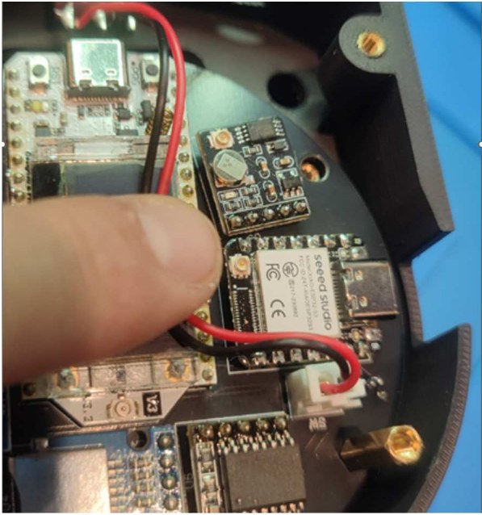

17
9. STEP 5 – MOUNT PCB & CONNECT POWER AND RF PIGTAILS (CRITICAL)
9.1 Position PCB
- Place PCB into main housing
- Align mounting holes
- Connect cable from power switch to JST marked SW on the PCB
- Insert 15 mm M3 standoffs into the two lower holes (to hold the lower part of the front cover)
